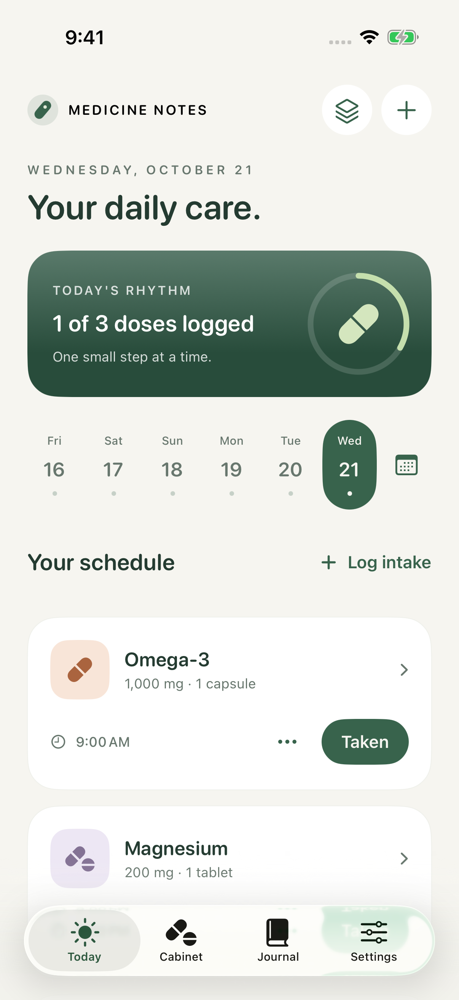
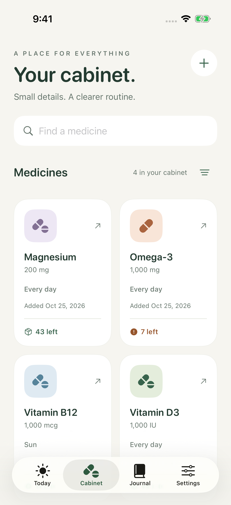
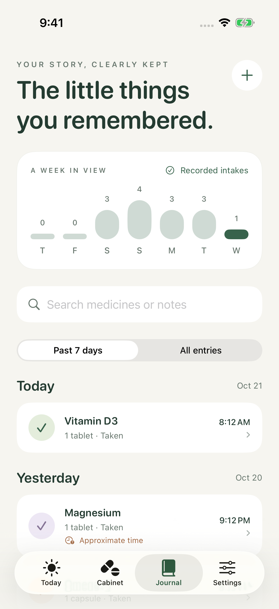
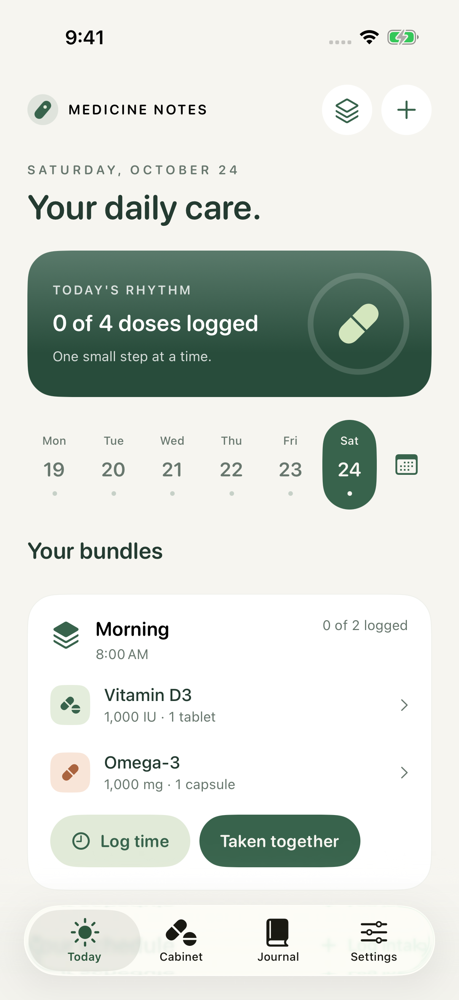

Your care. Your space.
A little care.
A clearer day.
Your medicines, daily routine, and the small details that are easy to forget. Together in one calm, personal journal.
Made for iPhone & iPad · App Store release in preparation

Real app screens. Sample records, not dose advice.A place for the everyday
Less to keep
in your head.
Set up the plan you have agreed with your clinician. Record what happened, see what is left, and keep your own notes. Your routine stays yours.

A cabinet,
in your pocket.
Keep names, strengths, label photos and supply in one place. Scan a label to reduce typing, then check every field.

A record you
can come back to.
Log an intake now or add an earlier time. Correct entries and add a note when a detail matters.

Small shortcuts.
Separate records.
Bundle medicines for easier logging. Each keeps its own dose, supply and journal. Bundles do not check interactions.
Privacy, in plain language
Your journal
has a home.
Your device.
No developer account. No advertising profile. No journal uploads to a developer server.
Read the complete privacy policy ↗- Local by design.This version has no cloud sync. The journal database is excluded from automatic device backup. Keep a private export before changing devices.
- Apple AI. On your device.Available Apple Intelligence features help extract label names and write short descriptions. Suggestions can be wrong; you review them.
- You choose when to go online.An optional MedlinePlus search sends the name you enter to NLM. It never attaches your journal or label photos.
We are here for the app
A question?
Start here.
Find the basics below, or read the complete help guide. For an app problem or privacy request, use the contact form.
Medicine Notes is a personal record tool. It does not prescribe, choose doses, check interactions or replace a doctor or pharmacist. Ask a qualified professional before making medical decisions. For urgent concerns, seek local medical help.
Contact Ivan Kramarchuk
For app support, privacy requests and security concerns. Include your app version, iOS or iPadOS version, and steps that show the problem.
Please do not include medicine names, prescriptions, label photos or backup files. The form sends only what you type. Opening it loads Formspree contact handling and Cloudflare spam protection.
How do I start?
Open Cabinet, tap +, and enter the medicine from your prescription. Add optional times, then record actual intakes in Today or Journal. Check amounts and units before saving.
Why did a reminder not arrive?
Check notification permission, Focus, silent mode, and your schedule. Reminders follow local device time and are subject to system limits. Use an independent safeguard for critical treatment.
Where is my data?
The journal is stored on this device. There is no app cloud sync in this version. Export a private JSON copy before replacing your device. Exports are not encrypted.
Can I delete everything?
Settings → Erase all local journal data removes medicines, history, photos and bundles. Your exported files and copies created by older versions need separate deletion. Offloading an app keeps its data; deleting the app removes its local container.
Where do medicine guides come from?
Public MedlinePlus.gov pages from the U.S. National Library of Medicine. Search contacts NLM only after you choose Search. Check the exact product and local prescription with a doctor or pharmacist.
What does Apple Intelligence do?
On supported devices, the on-device model can extract a printed name from label text and suggest a short description. It does not diagnose, choose a dose or verify medical accuracy. You can use manual entry without Apple Intelligence.
Can I recover an old cloud copy?
This version does not connect to older development cloud containers. Existing local records use their original database location. Keep any old device until you have made and checked a private export.